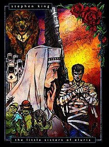

Stephen Edwin King (born September 21, 1947) is an American author. Called the "King of Horror", he has also explored other genres, among them suspense, crime, science-fiction, fantasy and mystery. He has also written approximately 200 short stories, most of which have been published in collections. His debut, Carrie (1974), established him in horror. Different Seasons (1982), a collection of four novellas, was his first major departure from the genre. Among the films adapted from King's fiction are Carrie, Christine, The Shining, The Dead Zone, Stand by Me, Misery, Dolores Claiborne, The Shawshank Redemption, The Green Mile and It. He has published under the pseudonym Richard Bachman and has co-written works with other authors, notably his friend Peter Straub and sons Joe Hill and Owen King. He has also written nonfiction, notably On Writing: A Memoir of the Craft.
The Dark Tower (series)
The Dark Tower is a series of eight novels, one novella, and a children's book written by American author Stephen King. Incorporating themes from multiple genres, including dark fantasy, science fantasy, horror, and Western, it describes a "gunslinger" and his quest toward a tower, the nature of which is both physical and metaphorical. The series, and its use of the Dark Tower, expands upon Stephen King's multiverse and in doing so, links together many of his other novels.

"The Little Sisters of Eluria"
The Dark Tower: The Gunslinger
The story centers Roland Deschain, the last gunslinger, who has been chasing his adversary, "the man in black," for many years